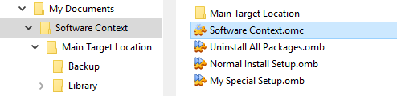
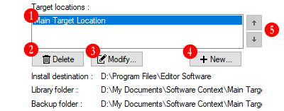
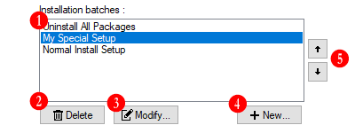

The Software Context is the Manager related primary object. Since the Manager is due to apply and manage Mods (modifications) for a third-party softwares (or games), the primary objects it handle are the workspaces related to these third-party softwares, which here, are called Software Context or simply Context. So to say, like an image editor deals with images, Open Mod Manager deals with Software Context.
A simple way to understand Software Context is to view it as the root of a workspace related to a third-party software. This workspace is both abstract and concrete by the way a Software Context is located in its own standalone folder which will contains sub-elements related to this Context.
A Software Context take place in its home folder where are placed the Context definition file (.omc) itself, related Target Location subfolders and eventual additional files. This home folder can be located anywhere and is usually automatically created via the Context Creation Wizard.
Each Software Context should have its own home folder, not shared with another. It is technically possible to use the same home folder for multiple Software Context, however this has few interest and is not encouraged.
The Software Context home folder can be moved and renamed as wants. The definition file can also be renamed and not necessarily identical to its home folder.
The parameters related to a Software Context is saved in a file with the OMC extension (.omc). This is the first file created within the home folder and it is the file you must open to load a Software Context.
The location of the Software Context definition file determins the Software Context home folder. In other words, if you move the definition file to another folder, the new folder where you moved the definition file will becomes its home folder, and this whatever its content.
The OMC file is actualy a standard UTF-8 encoded XML file. It can be viewed and edited using any text editor supporting UTF-8 encoding.
As Software Context itself is more a container, most relevant things are its components, the main one is the Target Location. The Target Location define a workspace related to a specific Target Destination folder (where Mods are to be installed) which is usualy the targeted third-party software root folder.
The Target Location is not the purpose of this chapter, it has its own chapter which explain its principle, review its components and related parameters.
A Software Context should have at least ONE Target Location, otherwise it is like an empty shell, with only a name and some basic defined parameters.
Like the Software Context, in a modular mechanism purpose, the Target Location consist on an home folder with an inner definition file where the location of the definition file itself defines the Target Location home folder.
In practical, When a Software Context loads, the Manager seeks for subfolders within the Software Context's home folder, in each subfolder search for a Target Location definition file (.oml) and if found, loads the Target Location like a Software Context's module. So, Target Locations and Software Contexts are not formally linked together, this linking is dynamic, created at Software Context loading depending on found Target Locations within the Software Context's home folder.
What should be understood here is that it is actualy possible to move or copy a Target Location from one Software Context to another simply by moving or copying its home folder with its content from a Software Context home folder to another one.
Open Mod Manager provides a Software Context creation Wizard which will guide you through the creation of a new Software Context and its first Target Location. This chapter will details each steps and parameters related to this procedure.
To launch the Software Context Creation Wizard, go to the File menu, select New then Software Context...
File
⋮
New › › Software Context...
This is the indicative name used to identify the Software Context among the others. By convention the home folder and definition file will be named according this value, however, it is a Software Context own value which is displayed as this name whathever how its home folder or definition file are named.
This is the path to the folder where the wizard will create the Software Context home folder. This can be literally anywhere you want.
The Software Context home folder can be moved or renamed after the creation. Naming home folder and definition file the same as its name value is not mandatory, it is a simple convention.
This is the resulting path composed from name and path parameters to show where the Wizard will actually create the Software Context home folder.
The Target Location is not the purpose of this chapter, it has its own chapter which explain its principle, review its components and related parameters.
This is the indicative name used to identify the Target Location among the others. By convention its home subfolder and definition file will be named according this value, however, it is a Target Location own value which is displayed as this name whathever how its home subfolder or definition file are named.
This is the third-party software reference target folder, where Packages are to be installed. This is the root of the the third-party software's file tree, and where the Packages's files will be copied to complete or overwrite third-party software's files. This is usually the targeted third-party software root (or installation) folder.
See the Mod Package chapter for more informations about the Target Destination folder, the Packages's architecture and how they are installed.
This parameter allow you to specify a custom folder as Packages Library. The Package Library folder is where the Manager will look at to find available Packages to be installed. By default, each Target Location have its own Library folder within its home folder, it is however possible to specify a custom folder, extern from home folder, and shared with others.
This parameter allow you to specify a custom folder as Backup storage. The Backup folder is where the Manager will store all backup data required to properly restore original third-party software files. By default, each Target Location have its own Backup folder within its home folder, it is however possible to specify a custom folder, extern from home folder, and shared with others.
To edit Software Context parameter, open and select the Software Context you want to edit parameters and click on the Edit menu then select Software Context properties...
Edit
⋮
Software Context properties...
This properties tab gather the Software Context's base parameters.
Displays the Software Context home folder path.
This is the indicative name or title, used to identify the Software Context among the others.
Changing this value does not rename the Software Context's definition file nor its home folder. You can freely rename these both element in the common way via Windows Explorer.
The Software Context associated application icon. A Software Context can be associated with an external icon, usualy from the third-party software it is related to.
To select an icon to associate, click on the button then choose either an icon file or an application executable that display the desired icon.
To remove the current associated icon, click on the button.
This properties tab gather the Software Context's Target Locations list and related actions.
The Target Location is not the purpose of this chapter, it has its own chapter which explain its principle, review its components and related parameters.
The list of the current Target Location linked to the Software Context. The list is ordered by internal indexation automatically incremented by order of creation. In case of multiple Target Locations this order can be modified as user preferences.
Deletes the selected Target Location in list. This operation permanently deletes the Target Location home folder and all its content except if the Library folder is not empty (in this case, the Library folder is left alone and untouched within the home folder).
The deletion process also uninstall all packages in order to delete all backup data and restore the third-party software initial state.
Opens the Target Location properties dialog window for the selected Target Location in list.
Opens the Target Location Creation dialog window to add an new Target Location within the Software Context home folder.
In case of multiple Target Locations, allow to change the position in list of the selected Target Location.
This properties tab gather the Software Context's Installation Batches list and related actions.
The Installation Batch is not the purpose of this chapter, it has its own chapter which explain its principle, review its components and related parameters.
The list of the current Installation Batches linked to the Software Context. The list is ordered by internal indexation automatically incremented by order of creation. In case of multiple Installation Batches this order can be modified as user preferences.
Deletes (permanently) the selected Installation Batch in list.
Opens the Installation Batch properties dialog window for the selected Installation Batch in list.
Opens the Installation Batch Creation dialog window to create a new Installation Batch for the Software Context.
In case of multiple Installation Batch, allow to change the position in list of the selected Installation Batch.
If enabled, the Quiet Mode for Installation Batches execution disables all the usual packages installation and uninstallation related warnings messages. This allow fluent batch executions to its conclusion witout interruption nor required action.